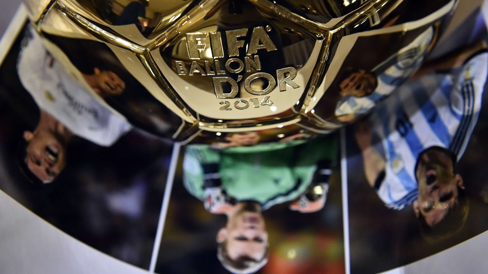

-

What do you know?
let us show you in an interesting way!

Who is the winner?
Based on big data, we can make a forecasting!

We are looking for...
Who is the shiniest star in Zurich?
let us show you in an interesting way!
Based on big data, we can make a forecasting!
Who is the shiniest star in Zurich?
Nearly every year after the FIFA Ballon d'Or award ceremony,
the shady deal will be reported.
After 2014 Ballon d'Or award ceremony,it reported that voting results of 10 coaches have been 'strangely' tampered, and the more ironic thing is that 2 coaches have been ignored by FIFA.
In 2013,Jose Mourinho complained that he and Ronaldo were treated unfairly by FIFA because some coaches called and told him they had voted for him but at last these votes appeared under other candidates' names. And he thought Ronaldo is much more qualified than Messi for the Ballon d'Or.
After Messi was awarded FIFA Ballon d'Or in 2010, many people wondered why he deserved it because he was not as outstanding as his competitors in that year.
Since 2011, the FIFA Ballon d’Or award ceremony began to be hosted in Zurich which is the largest city in Switzerland and the capital of the canton of Zurich, and it is said that the corporation between the city and FIFA will last at least 5 years.
Barça announced they will put the freeze on FIFA and they will not be sending representatives to support Lionel Messi at this year’s award ceremony for the 2014 FIFA Ballon d’Or.
FIFA was founded in 1904, then moved the headquarters to Zürich in 1932. Membership now comprises 209 national associations. The current president of FIFA is Sepp Blatter who was re-elected in 2011.
We’re waiting…
“In this part,we will analyze the great football player,Messi and C-Ronaldo.And we will use the diagram to compare who is more excellent. ”
“ C-Ronaldo,at the end of the 2014,he had had 149 professional football match,250 goals,83 assistance in the club.And the total number is:540 matches,345 goals,105 assistance. ”
“ Messi,at the end of the 2014,he had had 277 professional football match,253 goals,94 assistance in the club.And the total number is:417 matches,351 goals,132 assistance. ”
From the diagram,we can see that C-Ronaldo and Messi are excellent.And the basic data is quite same,we analyze the goals,assistance and the matches they have played.
We use the numbers to analyze their competencies referring to their performances in the club and countries.PAC=Pace SHO=Shot PAS=Pass DRI=Dribbling DEF=Defend HEA=Heading.
This chart reflect the history goals of Messi and C-Ronaldo in their career.From this chart we can see that Messi is more stable.
Who ranked the top three,see it from the following charts:
After 2014 Ballon d'Or award ceremony,
By analyzing the voting results from 2007 to 2013, we can learn that the most important influences are the honors of the player himself, his football club and national team, among these, the personal honors take up the most proportion, then the football club, finally the national team. In the World Cup year, the performance of the national team is a consideration, however, in recent years, it has gradually lost its influences as it used had with changes of voting rules. Besides, the team role player plays is also a considerate factor.
Another great possibility is Lionel Messi, who has been the top 3 of Ballon d'Or for 8 years. This year, he became the all-time top scorer in La Liga, and the all-time leading goalscorer in the UEFA Champions League. In the Brazil World Cup, he helped his national team Argentina struggled into the finals and got the Runner-up, which is the greatest achievement since 1990. At the conclusion of the World Cup final, Messi was awarded the Golden Ball, and was named in the FIFA World Cup All-Star Team. Similarly, there is also a regret for Messi, his club team didn't get any champions this year which made him less competitive than Ronaldo.
The last year's winner Cristiano Ronaldo is considered to be the most possible one to receive 2014 Ballon d'Or. This year, he almost won all of individual awards in Europe, broke the single season goals scored record of UEFA Champions League, and his club, Real Madrid, has won champions of UEFA Champions League and the European Cup. Besides, he helped the team won the champion of Copa del Rey in Spain. The only regret this year was that in the Brazil World Cup, the Portugal national team fail to qualify for the finals.
The last candidate is Manuel Neuer, who is one of the hottest football players in recent years. His club team Bayern Munich won the champions of Bundesliga and DFB-Pokal. His national team got the champion of Brazil World Cup and he himself got FIFA World Cup Golden Glove due to his wonderful performance. However, Neuer now cannot make the same contributions as Ronaldo and Messi do to the whole team. And his role as a goalkeeper in the team is also a limit since there is only one goalkeeper received Ballon d'Or in the history and it happened in 1963. Compared with Ronaldo and Messi, there is still a long distance for Neuer to Ballon d'Or.